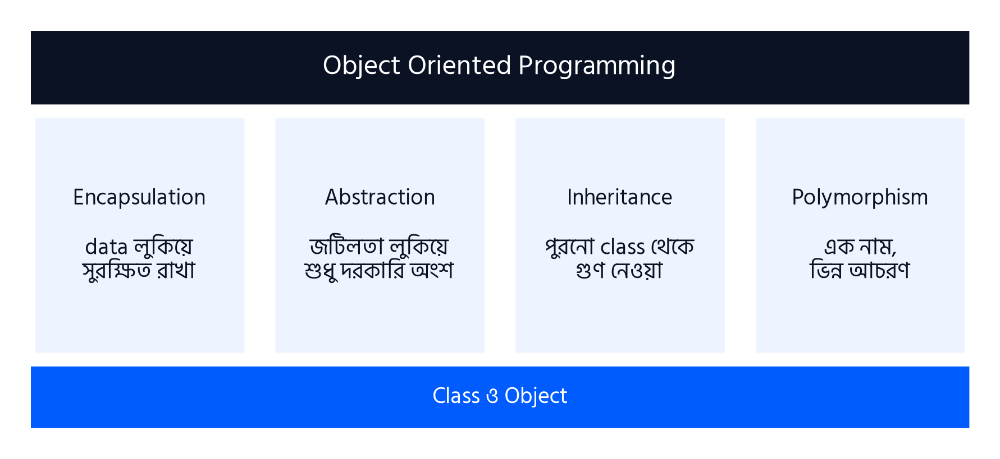
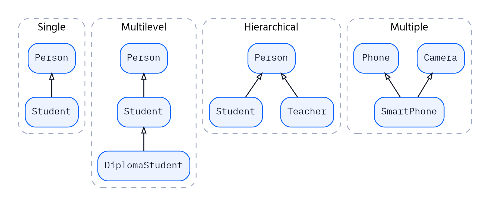

অধ্যায় ৫
Four Pillars of OOP
অধ্যায় ৪-এ আমরা class বানাতে শিখেছি, object তৈরি করেছি, constructor আর self বুঝেছি। কিন্তু সেখানে দুটো প্রশ্ন খোলা রেখে এসেছিলাম। BankAccount-এর balance বাইরে থেকে acc.balance = 1000000 লিখে যে কেউ বদলে দিতে পারে — এটা আটকাব কীভাবে? আর Student, Teacher, Staff — সবার নাম, ফোন নম্বর, ঠিকানা আছে; প্রতিটা class-এ একই কোড বারবার লিখব?
এই প্রশ্নগুলোর উত্তরই OOP-এর চার স্তম্ভ: Encapsulation, Abstraction, Inheritance আর Polymorphism। এই চারটা ছাড়া class শুধু data রাখার একটা বাক্স। এদের দিয়েই OOP আসল শক্তি পায়। পরীক্ষার দৃষ্টিতেও এই অধ্যায় সবচেয়ে গুরুত্বপূর্ণ — প্রায় প্রতিটা প্রশ্নপত্রে এখান থেকে বড় প্রশ্ন থাকে।
5.1 OOP-এর চার স্তম্ভ
একটা বাড়ির ছাদ টিকে থাকে কয়েকটা খুঁটির উপর। OOP-এর পুরো কাঠামোও দাঁড়িয়ে আছে চারটা মূল ধারণার উপর। এদের বলা হয় Four Pillars of OOP।

| স্তম্ভ | এক লাইনে অর্থ | বাস্তব উদাহরণ |
|---|---|---|
| Encapsulation | Data আর method এক class-এ বেঁধে রাখা এবং data বাইরের হস্তক্ষেপ থেকে সুরক্ষিত রাখা | ATM — ভেতরের টাকা সরাসরি ধরা যায় না, শুধু কার্ড আর PIN দিয়ে নির্দিষ্ট নিয়মে তোলা যায় |
| Abstraction | ভেতরের জটিল কাজ লুকিয়ে শুধু দরকারি অংশটুকু ব্যবহারকারীকে দেখানো | মোটরসাইকেল চালাতে ইঞ্জিন কীভাবে কাজ করে জানতে হয় না, accelerator আর brake জানলেই চলে |
| Inheritance | একটা class অন্য class-এর attribute ও method উত্তরাধিকার সূত্রে পায় | সন্তান বাবা-মায়ের কিছু বৈশিষ্ট্য পায়, আবার নিজের নতুন বৈশিষ্ট্যও থাকে |
| Polymorphism | একই নামের method ভিন্ন object-এ ভিন্নভাবে কাজ করে | "শব্দ করো" বললে কুকুর ঘেউ ঘেউ করে, বিড়াল মিউ মিউ, গরু হাম্বা |
5.2 চার স্তম্ভের গুরুত্ব
প্রতিটা স্তম্ভ একটা নির্দিষ্ট সমস্যার সমাধান করে। কোন স্তম্ভ কোন সমস্যা মেটায়, সেটা বুঝলে গুরুত্বও আপনা থেকে পরিষ্কার হয়ে যায়।
| স্তম্ভ | কোন সমস্যার সমাধান করে | গুরুত্ব |
|---|---|---|
| Encapsulation | যে কেউ object-এর data ভুলভাবে বদলে ফেলতে পারে | Data নিরাপদ থাকে; data বদলানোর সব নিয়ম এক জায়গায় থাকে; ভুল মান ঢোকা আটকানো যায় |
| Abstraction | ব্যবহারকারীকে ভেতরের সব জটিলতা জানতে হয় | ব্যবহার সহজ হয়; ভেতরের কোড বদলালেও ব্যবহারকারীর কোড বদলাতে হয় না; একটা নিয়ম (contract) ঠিক করে দেওয়া যায় |
| Inheritance | একই কোড অনেকগুলো class-এ বারবার লিখতে হয় | Code reuse হয়; কোড ছোট হয়; একটা ভুল এক জায়গায় ঠিক করলেই সবখানে ঠিক হয় |
| Polymorphism | প্রতিটা ধরনের object-এর জন্য আলাদা আলাদা if-else লিখতে হয় | একই কোড দিয়ে বিভিন্ন ধরনের object চালানো যায়; নতুন ধরন যোগ করলে পুরনো কোড বদলাতে হয় না |
একটা বাস্তব software দিয়ে চারটাকে একসাথে দেখি। ধরো একটা Polytechnic-এর management software:
- Inheritance: Student আর Teacher দুজনেরই নাম, ফোন, ঠিকানা আছে। এগুলো একবার Person class-এ লিখে Student আর Teacher-কে Person থেকে inherit করানো হলো।
- Encapsulation: ছাত্রের CGPA যে কেউ বদলাতে পারবে না। শুধু result publish করার method-ই সেটা বসাতে পারবে, তাও 0 থেকে 4-এর মধ্যে।
- Polymorphism: "সবার মাসিক হিসাব দেখাও" বললে Student-এর ক্ষেত্রে বেতন (tuition fee) দেখায়, Teacher-এর ক্ষেত্রে বেতন (salary) — একই method নাম, ভিন্ন হিসাব।
- Abstraction: যে programmer report বানাচ্ছে, তার জানার দরকার নেই প্রতিটা হিসাব ভেতরে কীভাবে হয়। সে শুধু জানে প্রতিটা Person-এর একটা monthly_amount() method আছে।
5.3 Inheritance
ধরো Polytechnic-এর জন্য software বানাচ্ছ। Student class-এ লাগবে name, phone আর একটা show_contact() method। Teacher class-এও ঠিক একই জিনিস লাগবে। Staff class-এও। তিন জায়গায় একই কোড? আর পরে ফোন নম্বরের format বদলালে তিন জায়গাতেই ঠিক করবে?
Inheritance হলো এমন ব্যবস্থা, যেখানে একটা class অন্য একটা class-এর সব attribute আর method উত্তরাধিকার সূত্রে পেয়ে যায়। যে class থেকে নেওয়া হয় তাকে বলে Parent class (বা Base class, Super class)। যে class নেয় তাকে বলে Child class (বা Derived class, Sub class)।
Syntax
class ParentClass:
# parent-এর attribute ও method
class ChildClass(ParentClass):
# child নিজে থেকেই parent-এর সবকিছু পায়
Child class-এর নামের পর bracket-এ parent class-এর নাম লিখলেই inheritance হয়ে যায়।
Basic Inheritance ও Method Reuse
উদাহরণ 5.1Person থেকে Student
সমস্যা: Person class-এ নাম আর ফোন রাখার ব্যবস্থা করো। Student class-কে Person থেকে inherit করাও এবং দেখাও যে Student কোনো কোড না লিখেই Person-এর সবকিছু পাচ্ছে।
1class Person:
2 def __init__(self, name, phone):
3 self.name = name
4 self.phone = phone
5
6 def show_contact(self):
7 print(f"{self.name}: {self.phone}")
8
9class Student(Person):
10 pass
11
12p1 = Person("Abdul Karim", "01711-000001")
13s1 = Student("Rahim", "01811-000002")
14p1.show_contact()
15s1.show_contact()
Abdul Karim: 01711-000001 Rahim: 01811-000002
লাইন-বাই-লাইন ব্যাখ্যা
| 1–7 | class Person:
def __init__(self, name, phone):
self.name = name
self.phone = phone
def show_contact(self):
print(f"{self.name}: {self.phone}") | সাধারণ একটা Person class — অধ্যায় ৪-এ যেমন লিখেছি। |
| 9 | class Student(Person): | Student(Person) মানে Student হলো Person-এর child। এই এক শব্দেই Person-এর constructor আর show_contact() method Student পেয়ে গেল। |
| 10 | pass | Student-এর নিজের কোনো কোড নেই, শুধু pass। |
| 13 | s1 = Student("Rahim", "01811-000002") | Student তৈরির সময় Person-এর constructor চলল, কারণ Student-এর নিজের constructor নেই। |
| 15 | s1.show_contact() | Student class-এ show_contact() লেখাই হয়নি, তবু কাজ করছে — parent থেকে পাওয়া। এটাই method reuse। |
super(): Parent-এর Constructor ডাকা
এবার Student-এর একটা নিজস্ব attribute লাগবে: roll। তার মানে Student-এর নিজের constructor দরকার। কিন্তু Student নিজের constructor লিখলে Person-এর constructor আর চলবে না — name আর phone আবার লিখতে হবে? না। super() দিয়ে parent-এর constructor ডেকে নেওয়া যায়।
উদাহরণ 5.2super() দিয়ে Constructor বাড়ানো
সমস্যা: Student-এ roll আর department যোগ করো, কিন্তু name ও phone-এর কাজ Person-এর constructor-কেই করতে দাও।
1class Person:
2 def __init__(self, name, phone):
3 self.name = name
4 self.phone = phone
5
6class Student(Person):
7 def __init__(self, name, phone, roll, dept):
8 super().__init__(name, phone)
9 self.roll = roll
10 self.dept = dept
11
12 def show(self):
13 print(f"{self.name} | Roll {self.roll} | {self.dept} | {self.phone}")
14
15s1 = Student("Sumaiya", "01611-000004", 102, "Computer")
16s1.show()
Sumaiya | Roll 102 | Computer | 01611-000004
লাইন-বাই-লাইন ব্যাখ্যা
| 7 | def __init__(self, name, phone, roll, dept): | Student-এর নিজস্ব constructor, চারটা তথ্য নিচ্ছে। |
| 8 | super().__init__(name, phone) | super() মানে parent class। super().__init__(name, phone) মানে "parent-এর constructor-কে বলো name আর phone বসিয়ে দিতে"। Person-এর কোড আবার লিখতে হলো না। |
| 9–10 | self.roll = roll
self.dept = dept | শুধু Student-এর নিজস্ব দুটো attribute এখানে বসানো হলো। |
| 13 | print(f"{self.name} | Roll {self.roll} | {self.dept} | {self.phone}") | show()-এ parent-এর বসানো (name, phone) আর child-এর বসানো (roll, dept) — সব attribute একসাথে ব্যবহার করা যাচ্ছে, কারণ সবগুলোই একই object-এর। |
Method Overriding
কখনো কখনো child-এর কাছে parent-এর method-টা ঠিক মানায় না। তখন child একই নামে নিজের version লিখতে পারে। একে বলে method overriding। Object-এর method ডাকলে Python আগে child class-এ খোঁজে; সেখানে পেলে সেটাই চালায়, না পেলে parent-এ যায়।
উদাহরণ 5.3Overriding ও super() একসাথে
সমস্যা: Person-এর introduce() method আছে। Student সেটা override করবে, কিন্তু parent-এর পরিচয়টাও রাখবে।
1class Person:
2 def __init__(self, name):
3 self.name = name
4
5 def introduce(self):
6 print(f"Hi, I am {self.name}.")
7
8class Student(Person):
9 def __init__(self, name, dept):
10 super().__init__(name)
11 self.dept = dept
12
13 def introduce(self):
14 super().introduce()
15 print(f"I study in the {self.dept} department.")
16
17p1 = Person("Abdul Karim")
18s1 = Student("Tanvir", "Civil")
19p1.introduce()
20print("---")
21s1.introduce()
Hi, I am Abdul Karim. --- Hi, I am Tanvir. I study in the Civil department.
লাইন-বাই-লাইন ব্যাখ্যা
| 5–6 | def introduce(self):
print(f"Hi, I am {self.name}.") | Parent-এর introduce()। |
| 13–15 | def introduce(self):
super().introduce()
print(f"I study in the {self.dept} department.") | Student একই নামে introduce() লিখেছে — এটাই overriding। ভেতরে প্রথমে super().introduce() দিয়ে parent-এর version চালানো হলো, তারপর নিজের অতিরিক্ত লাইন। পুরো বদলে না দিয়ে parent-এর কাজ বাড়িয়ে নেওয়া হলো। |
| 19 | p1.introduce() | Person object-এর জন্য Person-এর version চলল। |
| 21 | s1.introduce() | Student object-এর জন্য Student-এর version চলল। Python আগে child-এ খুঁজে পেয়েছে। |
Inheritance-এর প্রকারভেদ

| প্রকার | গঠন | উদাহরণ |
|---|---|---|
| Single | একটা parent → একটা child | Person → Student |
| Multilevel | parent → child → grandchild (শিকলের মতো) | Person → Student → DiplomaStudent |
| Hierarchical | একটা parent → একাধিক child | Person → Student, Teacher |
| Multiple | একাধিক parent → একটা child | Phone, Camera → SmartPhone |
5.4 Encapsulation
অধ্যায় ৪-এর BankAccount-এ deposit() আর withdraw() খুব যত্ন করে লিখেছিলাম: ঋণাত্মক টাকা জমা নেওয়া যাবে না, balance-এর বেশি তোলা যাবে না। কিন্তু দেখো:
1class BankAccount:
2 def __init__(self, owner, balance):
3 self.owner = owner
4 self.balance = balance
5
6 def withdraw(self, amount):
7 if amount > self.balance:
8 print("Insufficient balance")
9 else:
10 self.balance -= amount
11
12acc = BankAccount("Nusrat", 1000)
13acc.balance = -50000
14print(acc.owner, "has", acc.balance, "Tk")
Nusrat has -50000 Tk
লাইন-বাই-লাইন ব্যাখ্যা
| 13 | acc.balance = -50000 | withdraw()-এর সব নিয়ম পাশ কাটিয়ে কেউ সরাসরি balance-এ ঋণাত্মক পঞ্চাশ হাজার বসিয়ে দিল। Python কোনো আপত্তি করল না। |
নিয়ম লেখা আছে, কিন্তু নিয়ম মানতে কাউকে বাধ্য করা হচ্ছে না। Encapsulation এই সমস্যার সমাধান: data আর সেই data নিয়ে কাজ করা method এক class-এ বেঁধে রাখা, এবং data-কে বাইরের সরাসরি হাত থেকে লুকিয়ে রাখা — যেন data বদলাতে হলে class-এর দেওয়া method দিয়েই বদলাতে হয়।
Access Modifier: Public, Protected, Private
Java বা C++-এ public, private লেখার জন্য আলাদা keyword আছে। Python-এ নেই — এর বদলে নামের শুরুতে underscore দিয়ে বোঝানো হয়:
| ধরন | লেখার নিয়ম | কে ব্যবহার করতে পারে | উদাহরণ |
|---|---|---|---|
| Public | সাধারণ নাম | যে কেউ, যেকোনো জায়গা থেকে | self.owner |
| Protected | শুরুতে একটা underscore | Class ও তার child class (শুধু নিয়ম, Python বাধা দেয় না) | self._branch |
| Private | শুরুতে দুটো underscore | শুধু class-এর নিজের ভেতরে | self.__balance |
উদাহরণ 5.4তিন ধরনের Attribute
সমস্যা: BankAccount-এ public, protected আর private তিন ধরনের attribute রেখে বাইরে থেকে access করার চেষ্টা করো।
1class BankAccount:
2 def __init__(self, owner, branch, balance):
3 self.owner = owner
4 self._branch = branch
5 self.__balance = balance
6
7acc = BankAccount("Nusrat", "Dhanmondi", 1000)
8print(acc.owner)
9print(acc._branch)
10print(acc.__balance)
Nusrat Dhanmondi Traceback (most recent call last): ... AttributeError: 'BankAccount' object has no attribute '__balance'
লাইন-বাই-লাইন ব্যাখ্যা
| 3 | self.owner = owner | Public attribute। কোনো বাধা নেই। |
| 4 | self._branch = branch | Protected attribute। একটা underscore মানে programmer-দের মধ্যে একটা ভদ্রলোকের চুক্তি: "এটা ভেতরের জিনিস, বাইরে থেকে ধরো না।" |
| 5 | self.__balance = balance | Private attribute। দুটো underscore। |
| 8 | print(acc.owner) | Public — সহজেই পাওয়া গেল। |
| 9 | print(acc._branch) | Protected-ও পাওয়া গেল! Python আসলে protected-এ বাধা দেয় না। এটা শুধু সতর্কবার্তা, তালা নয়। |
| 10 | print(acc.__balance) | Private-এ Python বাধা দিল: AttributeError। বাইরে থেকে __balance নামে কিছু খুঁজে পাওয়া যাচ্ছে না। |
Getter ও Setter
Private data যদি বাইরে থেকে দেখাই না যায়, তাহলে কাজ চলবে কীভাবে? Class নিজেই নিয়ন্ত্রিত দরজা খুলে দেয়: data পড়ার জন্য getter method, আর data বদলানোর জন্য setter method। Setter-এর ভেতরে নিয়ম পরীক্ষা করা যায়, ফলে ভুল মান কখনো ঢুকতে পারে না।
উদাহরণ 5.5Getter ও Setter দিয়ে CGPA রক্ষা
সমস্যা: Student-এর CGPA private রাখো। get_cgpa() দিয়ে পড়া যাবে, set_cgpa() দিয়ে বদলানো যাবে — কিন্তু শুধু 0.00 থেকে 4.00-এর মধ্যে।
1class Student:
2 def __init__(self, name, cgpa):
3 self.name = name
4 self.__cgpa = 0.0
5 self.set_cgpa(cgpa)
6
7 def get_cgpa(self):
8 return self.__cgpa
9
10 def set_cgpa(self, value):
11 if 0.0 <= value <= 4.0:
12 self.__cgpa = value
13 else:
14 print(f"Invalid CGPA {value}. Must be between 0.00 and 4.00")
15
16s = Student("Rahim", 3.50)
17print(s.name, s.get_cgpa())
18s.set_cgpa(5.75)
19print(s.name, s.get_cgpa())
20s.set_cgpa(3.80)
21print(s.name, s.get_cgpa())
Rahim 3.5 Invalid CGPA 5.75. Must be between 0.00 and 4.00 Rahim 3.5 Rahim 3.8
লাইন-বাই-লাইন ব্যাখ্যা
| 4–5 | self.__cgpa = 0.0
self.set_cgpa(cgpa) | প্রথমে __cgpa-কে 0.0 দিয়ে তৈরি করলাম, তারপর setter দিয়েই আসল মান বসালাম। ফলে constructor-এও একই নিয়ম খাটছে — ভুল CGPA দিয়ে object তৈরিই করা যাবে না। |
| 7–8 | def get_cgpa(self):
return self.__cgpa | Getter: শুধু মানটা ফেরত দেয়। বাইরে থেকে পড়ার একমাত্র উপায়। |
| 10–14 | def set_cgpa(self, value):
if 0.0 <= value <= 4.0:
self.__cgpa = value
else:
print(f"Invalid CGPA {value}. Must be between 0.00 and 4.00") | Setter: মান বসানোর আগে পরীক্ষা করে। 0.0 <= value <= 4.0 হলো Python-এর একটা সুবিধাজনক লেখা, মানে value 0.0-এর সমান বা বেশি এবং 4.0-এর সমান বা কম। |
| 18–19 | s.set_cgpa(5.75) print(s.name, s.get_cgpa()) | 5.75 বসানোর চেষ্টা প্রত্যাখ্যাত হলো, CGPA আগের মতোই 3.5 রইল। |
| 20–21 | s.set_cgpa(3.80) print(s.name, s.get_cgpa()) | বৈধ মান 3.80 গ্রহণ করা হলো। |
5.5 Polymorphism
Polymorphism শব্দটা গ্রিক: poly মানে অনেক, morph মানে রূপ। অর্থাৎ অনেক রূপ। OOP-এ এর মানে হলো: একই নামের method বা operation বিভিন্ন object-এর ক্ষেত্রে বিভিন্নভাবে কাজ করে। যে কোড method ডাকছে, তাকে জানতে হয় না object-টা আসলে কোন class-এর — প্রত্যেক object নিজের মতো করে সাড়া দেয়।
অধ্যায় ৪-এ built-in polymorphism দেখেছ: len() string আর list-এ আলাদাভাবে কাজ করে, * সংখ্যা আর string-এ আলাদা। এবার নিজের class-এ polymorphism তৈরি করব। সবচেয়ে প্রচলিত উপায় হলো method overriding।
Method Overriding-এর মাধ্যমে Polymorphism
উদাহরণ 5.6পশুর শব্দ
সমস্যা: Animal class থেকে Dog, Cat আর Cow বানাও। প্রত্যেকে speak() override করবে। তারপর একটা loop দিয়ে সবাইকে কথা বলাও।
1class Animal:
2 def __init__(self, name):
3 self.name = name
4
5 def speak(self):
6 return "..."
7
8class Dog(Animal):
9 def speak(self):
10 return "Woof!"
11
12class Cat(Animal):
13 def speak(self):
14 return "Meow!"
15
16class Cow(Animal):
17 def speak(self):
18 return "Hamba!"
19
20animals = [Dog("Bhulu"), Cat("Mini"), Cow("Lali"), Animal("Unknown")]
21for a in animals:
22 print(f"{a.name} says {a.speak()}")
Bhulu says Woof! Mini says Meow! Lali says Hamba! Unknown says ...
লাইন-বাই-লাইন ব্যাখ্যা
| 5–6 | def speak(self):
return "..." | Parent-এর সাধারণ speak()। |
| 8–18 | class Dog(Animal):
def speak(self):
return "Woof!"
class Cat(Animal):
def speak(self):
return "Meow!"
class Cow(Animal):
def speak(self):
return "Hamba!" | তিনটা child, প্রত্যেকে একই নামে speak() override করেছে, কিন্তু ভিন্ন ফল দেয়। |
| 20 | animals = [Dog("Bhulu"), Cat("Mini"), Cow("Lali"), Animal("Unknown")] | একটা list-এ ভিন্ন ভিন্ন class-এর object। |
| 21–22 | for a in animals:
print(f"{a.name} says {a.speak()}") | এটাই polymorphism-এর আসল সৌন্দর্য। loop-এর কোড জানে না a কোন class-এর — Dog, Cat নাকি Cow। সে শুধু বলছে a.speak(), আর প্রতিটা object নিজের version চালাচ্ছে। কোনো if-else লাগেনি। |
Polymorphism না থাকলে loop-টা এরকম দেখাত: if type is Dog: ... elif type is Cat: ... elif ...। নতুন একটা পশু (Goat) যোগ করলে এই if-else-এও হাত দিতে হতো। Polymorphism থাকায় শুধু Goat class লিখে list-এ যোগ করলেই চলবে — loop-এর কোড একটুও বদলাবে না।
Method Overloading বনাম Overriding
পরীক্ষায় প্রায়ই এই দুটোর পার্থক্য জানতে চাওয়া হয়। Java বা C++-এ একই class-এ একই নামের একাধিক method লেখা যায়, শুধু parameter সংখ্যা বা ধরন আলাদা হলে — একে বলে overloading। Python এভাবে overloading সমর্থন করে না: একই নামে দুবার method লিখলে শেষেরটা আগেরটাকে মুছে দেয়। Python-এ এই কাজ default argument দিয়ে করা হয়।
1class Calculator:
2 def add(self, a, b, c=0):
3 return a + b + c
4
5calc = Calculator()
6print(calc.add(2, 3))
7print(calc.add(2, 3, 4))
5 9
লাইন-বাই-লাইন ব্যাখ্যা
| 2 | def add(self, a, b, c=0): | c=0 default argument। তাই add() দুটো বা তিনটা — দুইভাবেই ডাকা যায়। Python-এ overloading-এর কাজ এভাবেই হয়। |
| বিষয় | Method Overloading | Method Overriding |
|---|---|---|
| কোথায় | একই class-এর ভেতরে | Parent ও child class-এ |
| কী হয় | একই নাম, ভিন্ন parameter | একই নাম, একই parameter, child-এ নতুন কাজ |
| Inheritance লাগে? | না | হ্যাঁ |
| Python-এ | সরাসরি সমর্থন নেই; default argument দিয়ে করা হয় | পুরোপুরি সমর্থিত |
5.6 Abstraction
ধরো Shape নামে একটা parent class আছে, যার area() শুধু 0 return করে, আর Circle, Rectangle নিজের area() override করে। এতে একটা লুকানো বিপদ আছে। এখন কেউ যদি নতুন একটা Hexagon class লেখে আর area() override করতে ভুলে যায়? Program কোনো error দেবে না, চুপচাপ ক্ষেত্রফল দেখাবে 0 — আর জমির হিসাব ভুল হয়ে যাবে। আমরা চাই এমন একটা নিয়ম, যেটা বলবে: "Shape-এর যেকোনো child-কে area() লিখতেই হবে, না লিখলে object-ই বানানো যাবে না।" এই নিয়ম তৈরির হাতিয়ারই Abstraction।
ABC, abstractmethod, abstract class ও abstract method
| পরিভাষা | অর্থ |
|---|---|
| abc | Python-এর built-in module (Abstract Base Classes)। এখান থেকে ABC আর abstractmethod import করতে হয়। |
| ABC | একটা বিশেষ class। কোনো class-কে abstract বানাতে তাকে ABC থেকে inherit করাতে হয়। |
| @abstractmethod | একটা decorator। কোনো method-এর উপর বসালে সেটা abstract method হয়ে যায়। |
| Abstract method | যে method-এর শুধু নাম ঘোষণা করা থাকে, কাজ লেখা থাকে না। Child class-কে এটা লিখতেই হবে। |
| Abstract class | যে class-এ অন্তত একটা abstract method আছে। এর সরাসরি object বানানো যায় না। |
| Concrete class | যে child class সব abstract method লিখে দিয়েছে। এর object বানানো যায়। |
Syntax
from abc import ABC, abstractmethod
class AbstractClassName(ABC):
@abstractmethod
def method_name(self):
pass
@abstractmethod লেখার ধরনটা নতুন লাগতে পারে। এটা একটা decorator — কীভাবে কাজ করে অধ্যায় ৬-এ বিস্তারিত শিখবে। আপাতত শুধু নিয়মটা মনে রাখো: method-এর ঠিক উপরের লাইনে বসাতে হয়।
উদাহরণ 5.7Abstract Shape
সমস্যা: Shape-কে abstract class বানাও যাতে area() abstract method। Circle আর Rectangle সেটা implement করবে। তারপর সরাসরি Shape-এর object বানানোর চেষ্টা করো।
1from abc import ABC, abstractmethod
2
3class Shape(ABC):
4 @abstractmethod
5 def area(self):
6 pass
7
8 def describe(self):
9 print(f"Area = {self.area():.2f}")
10
11class Circle(Shape):
12 def __init__(self, radius):
13 self.radius = radius
14
15 def area(self):
16 return 3.1416 * self.radius ** 2
17
18class Rectangle(Shape):
19 def __init__(self, length, width):
20 self.length = length
21 self.width = width
22
23 def area(self):
24 return self.length * self.width
25
26Circle(7).describe()
27Rectangle(20, 15).describe()
28s = Shape()
Area = 153.94 Area = 300.00 Traceback (most recent call last): ... TypeError: Can't instantiate abstract class Shape without an implementation for abstract method 'area'
লাইন-বাই-লাইন ব্যাখ্যা
| 1 | from abc import ABC, abstractmethod | abc module থেকে দুটো জিনিস import করলাম। |
| 3 | class Shape(ABC): | Shape এখন ABC-এর child, তাই এটা abstract হওয়ার যোগ্য। |
| 4–6 | @abstractmethod
def area(self):
pass | area() abstract method। এর body-তে শুধু pass — কারণ সাধারণ "আকৃতি"-র ক্ষেত্রফল বলে কিছু নেই। কাজটা প্রতিটা child নিজের মতো লিখবে। |
| 8–9 | def describe(self):
print(f"Area = {self.area():.2f}") | Abstract class-এ সাধারণ (concrete) method-ও থাকতে পারে। describe() সব child ব্যবহার করবে। |
| 15–16 | def area(self):
return 3.1416 * self.radius ** 2 | Circle নিজের area() লিখেছে, তাই এটা concrete class — object বানানো যায়। |
| 26–27 | Circle(7).describe() Rectangle(20, 15).describe() | Circle আর Rectangle ঠিকমতো কাজ করছে। |
| 28 | s = Shape() | Shape-এর object বানানোর চেষ্টা: TypeError। Abstract class হলো শুধু নকশার নিয়ম, এর নিজের object হয় না — যেমন "আকৃতি" নামে কোনো আসল আকৃতি আঁকা যায় না, আঁকতে হয় বৃত্ত বা আয়তক্ষেত্র। |
উদাহরণ 5.8Abstract method না লিখলে কী হয়?
সমস্যা: এবার সেই Hexagon-এর বিপদ। একটা child class বানাও যেটা area() লিখতে ভুলে গেছে।
1from abc import ABC, abstractmethod
2
3class Shape(ABC):
4 @abstractmethod
5 def area(self):
6 pass
7
8class Hexagon(Shape):
9 def __init__(self, side):
10 self.side = side
11
12h = Hexagon(4)
Traceback (most recent call last): ... TypeError: Can't instantiate abstract class Hexagon without an implementation for abstract method 'area'
লাইন-বাই-লাইন ব্যাখ্যা
| 8–10 | class Hexagon(Shape):
def __init__(self, side):
self.side = side | Hexagon, Shape থেকে inherit করেছে কিন্তু area() লেখেনি। |
| 12 | h = Hexagon(4) | Object বানানোর মুহূর্তেই TypeError। Python স্পষ্ট বলে দিচ্ছে কোন abstract method লেখা হয়নি। চুপচাপ 0 দেখানোর চেয়ে এটা অনেক ভালো — ভুলটা লেখার সময়েই ধরা পড়ল, ব্যবহারকারীর হাতে যাওয়ার আগে। |
Abstraction বনাম Encapsulation
দুটোতেই "লুকানো"-র কথা আছে বলে অনেকে গুলিয়ে ফেলে। পার্থক্যটা হলো কী লুকানো হচ্ছে আর কেন:
| বিষয় | Abstraction | Encapsulation |
|---|---|---|
| কী লুকায় | জটিলতা — কাজটা কীভাবে হয় | Data — object-এর ভেতরের তথ্য |
| মূল প্রশ্ন | Object কী করে? | Object-এর data কীভাবে সুরক্ষিত থাকবে? |
| Python-এ কীভাবে | ABC ও @abstractmethod | _protected, __private, getter, setter |
| কোন পর্যায়ে | Design পর্যায়ে — নিয়ম ঠিক করা | Implementation পর্যায়ে — data রক্ষা করা |
| উদাহরণ | রিমোটের বাটন; ভেতরের circuit জানতে হয় না | ATM-এর টাকা; সরাসরি হাত দেওয়া যায় না |
5.7 তিন স্তম্ভ মিলিয়ে Program
এবার তিনটা স্তম্ভ একসাথে ব্যবহার করে একটা পূর্ণ program লিখব। Program-এর শেষে একটা ছোট টেবিল আছে, যেখানে দেখানো হয়েছে কোন লাইনে কোন স্তম্ভ কাজ করছে — পরীক্ষার খাতায় এভাবে চিহ্নিত করে দিলে শিক্ষকের বুঝতে সুবিধা হয়।
উদাহরণ 5.9Employee Payroll System
সমস্যা: একটা প্রতিষ্ঠানের বেতন হিসাবের program লেখো। সব কর্মচারীর নাম আর মূল বেতন (private) থাকবে। Manager মূল বেতনের সাথে 20% bonus পায়, Intern পায় মূল বেতনের অর্ধেক। সবার মাসিক বেতন আর মোট খরচ দেখাও।
1class Employee:
2 def __init__(self, name, basic):
3 self.name = name
4 self.__basic = 0
5 self.set_basic(basic)
6
7 def get_basic(self):
8 return self.__basic
9
10 def set_basic(self, amount):
11 if amount >= 0:
12 self.__basic = amount
13 else:
14 print("Salary cannot be negative")
15
16 def monthly_pay(self):
17 return self.get_basic()
18
19 def show(self):
20 role = self.__class__.__name__
21 print(f"{self.name:<12} {role:<10} {self.monthly_pay():>9.2f} Tk")
22
23class Manager(Employee):
24 def monthly_pay(self):
25 return self.get_basic() * 1.20
26
27class Intern(Employee):
28 def monthly_pay(self):
29 return self.get_basic() * 0.5
30
31staff = [
32 Employee("Rahim", 25000),
33 Manager("Nasrin", 60000),
34 Intern("Tanvir", 16000),
35 Manager("Habib", 55000),
36]
37
38total = 0
39for person in staff:
40 person.show()
41 total += person.monthly_pay()
42print(f"Total monthly payroll: {total:.2f} Tk")
43
44staff[0].set_basic(-5000)
Rahim Employee 25000.00 Tk Nasrin Manager 72000.00 Tk Tanvir Intern 8000.00 Tk Habib Manager 66000.00 Tk Total monthly payroll: 171000.00 Tk Salary cannot be negative
লাইন-বাই-লাইন ব্যাখ্যা
| 2–5 | def __init__(self, name, basic):
self.name = name
self.__basic = 0
self.set_basic(basic) | নাম public, মূল বেতন private। Constructor-ও setter দিয়ে মান বসায়, তাই ঋণাত্মক বেতন দিয়ে object বানানো যাবে না। |
| 7–14 | def get_basic(self):
return self.__basic
def set_basic(self, amount):
if amount >= 0:
self.__basic = amount
else:
print("Salary cannot be negative") | Encapsulation: getter আর যাচাইসহ setter। |
| 16–17 | def monthly_pay(self):
return self.get_basic() | সাধারণ কর্মচারীর বেতন = মূল বেতন। লক্ষ করো, এখানেও self.__basic না লিখে getter ব্যবহার করেছি। |
| 19–21 | def show(self):
role = self.__class__.__name__
print(f"{self.name:<12} {role:<10} {self.monthly_pay():>9.2f} Tk") | show() শুধু parent-এ লেখা, কিন্তু ভেতরে monthly_pay() ডাকছে — কোন version চলবে, তা object ঠিক করবে। |
| 23–25 | class Manager(Employee):
def monthly_pay(self):
return self.get_basic() * 1.20 | Inheritance + Overriding: Manager, Employee-এর সবকিছু পেল, শুধু monthly_pay() বদলাল। child-এ মূল বেতন পেতে get_basic() ব্যবহার করতে হচ্ছে, কারণ __basic private — child-ও সরাসরি পায় না। |
| 27–29 | class Intern(Employee):
def monthly_pay(self):
return self.get_basic() * 0.5 | Intern-ও একইভাবে। |
| 38–41 | total = 0
for person in staff:
person.show()
total += person.monthly_pay() | Polymorphism: একই loop, একই show() আর monthly_pay() — কিন্তু প্রত্যেক ধরনের কর্মচারী নিজের নিয়মে বেতন হিসাব করছে। |
| 44 | staff[0].set_basic(-5000) | Encapsulation পাহারা দিচ্ছে: ঋণাত্মক বেতন প্রত্যাখ্যাত। |
| স্তম্ভ | কোথায় ব্যবহার হয়েছে |
|---|---|
| Encapsulation | __basic private; get_basic() ও set_basic() দিয়ে নিয়ন্ত্রিত access |
| Inheritance | Manager ও Intern, Employee থেকে name, বেতন, show() পেয়েছে |
| Polymorphism | monthly_pay() প্রতিটা class-এ ভিন্ন; একই loop সবার জন্য কাজ করে |
অধ্যায়ের সারসংক্ষেপ
| বিষয় | মূল কথা |
|---|---|
| চার স্তম্ভ | Encapsulation, Abstraction, Inheritance, Polymorphism। |
| গুরুত্ব | নিরাপত্তা (Encapsulation), সরলতা (Abstraction), পুনর্ব্যবহার (Inheritance), নমনীয়তা (Polymorphism)। |
| Inheritance | class Child(Parent):; parent-এর সব পায়; super() দিয়ে parent-এর method/constructor ডাকে; প্রকার: single, multilevel, hierarchical, multiple। |
| Overriding | Child-এ parent-এর একই নামের method নতুন করে লেখা; Python আগে child-এ খোঁজে। |
| Encapsulation | Data + method এক class-এ, data hiding; public, _protected, __private; getter ও setter। |
| Polymorphism | এক নাম, অনেক রূপ; overriding ও duck typing; Python-এ overloading-এর বদলে default argument। |
| Abstraction | জটিলতা লুকানো; ABC ও @abstractmethod; abstract class-এর object হয় না। |
অনুশীলনী · অধ্যায় ৫ (বোর্ড প্রশ্ন ও উত্তর)
PDF ক্রেতাদের জন্য
অনুশীলনী ও বোর্ড প্রশ্নের উত্তর লক করা
PDF কিনলে একটা আনলক কোড পাবে — কোডটা একবার দিলেই এই browser-এ সব অধ্যায়ের অনুশীলনী আর বোর্ড প্রশ্নের উত্তর খুলে যাবে।
PDF-এর দাম: ৫০ টাকা
- সব অধ্যায়ের অনুশীলনী
- বোর্ড প্রশ্নের উত্তর
- একবারেই সব খোলে
PDF কিনতে Facebook-এ মেসেজ দাও · facebook.com/kazitauhidrana ↗
প্রথম ২টি অধ্যায়ের অনুশীলনী সবার জন্য খোলা
এই অধ্যায় কেমন লাগল?
তোমার মতামত সরাসরি লেখকের কাছে যাবে। ভুল পেলে কোন section-এ, সেটাও লিখে দিও।